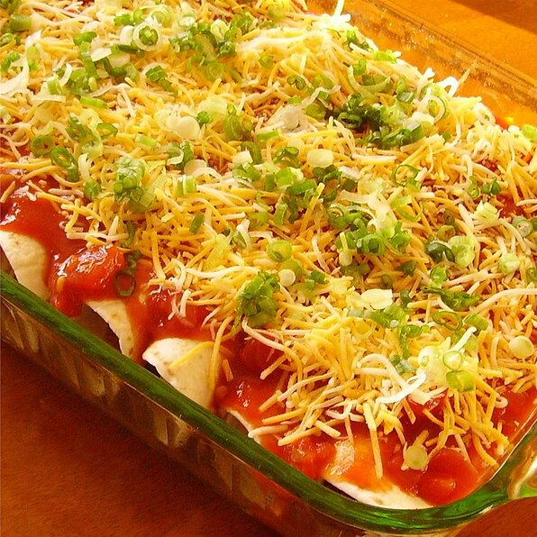

Easy Enchiladas

Beat taco night with enchilada night! These restaurant-style spicy enchiladas will surely please a crowd.
Ingredients
- 3/4 pound lean ground sirloin or turkey
- 1 1/2 cups diced red or green bell pepper
- 1 (1.25 ounce) package taco seasoning
- 8 (7 inch) flour or corn torillas
- 2 cups SARGENTO™ Fine Cut or Traditional Cut Shredded 4 Cheese Mexican
- 1 1/2 cups salsa or picante sauce
- 1 cup shredded lettuce
- 1 cup chopped tomato
- 1/2 cup light sour cream (Optional)
Method
- Heat large skillet over medium-high heat; add meat and bell pepper. Cook 5 minutes, stirring until meat crumbles and is
no longer pink; drain. Add taco seasoning mix and 1/2 cup water. Simmer, uncovered, 5 minutes or until sauce thickens,
stirring occasionally.
- Spoon 1/3 cup meat mixture down center of each tortilla; sprinkle with 2 tablespoons cheese. Rlil up; place seam-side
down in greased 13x9-inch baking pan. Spoon salsa over enchiladas.
- Cover with foil; bake in preheated 375 degrees F oven 18 minutes or until heated through. Uncover; sprinkle with
remaining cheese. Bake 2 minutes more or until cheese is melted. Serve with lettuce, tomato, if desired, sour cream.
- Voila! You're done!
Take me back!